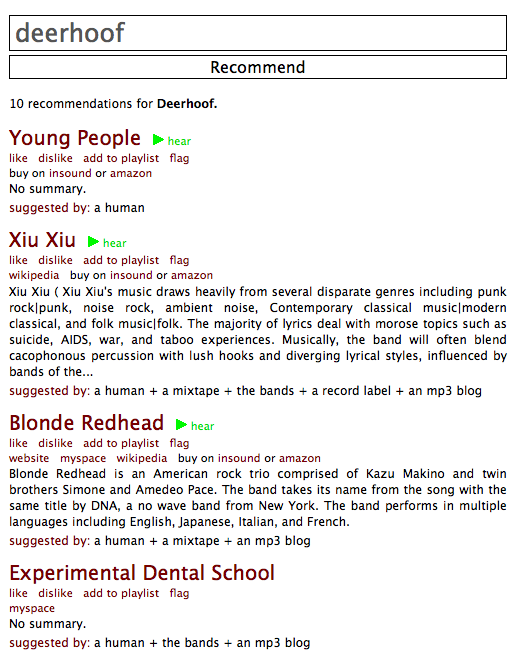

The perceptron - astute music recommendations
The interface is very simple - just type in the name of an artist that you like and the perceptron will give you a list of artists to try out - you can listen to music by the artist, read their Wikipedia bio, purchase tracks by the artist, add the artist to a playlist, etc. If you sign up and login to the perceptron, it tracks your activity and starts to adapt the recommendations based upon what you pay attention to. One thing I really like is how the perceptron tells you where the source of a recommendation comes from, like so:
This explanation is helpful in giving me a better understanding of why a particular recommendation was made.
maryrosecook explains the algorithm she uses in her blog. Included in her explanation is a table of weights that she's derived from user activity for the various sources of artist similarity data:
| Epitonic similar artists | 0.439 |
| Tiny Mix Tapes similar artists | 0.316 |
| Myspace top friends | 0.128 |
| Mixtapes | 0.075 |
| Record labels | 0.020 |
| Epitonic other artists | 0.016 |
| MP3 blogs | 0.003 |
No surprise that Epitonic similar artists have the highest weight, and is responsible for a good portion of the recommendations. I am a bit surprised that the MP3 blogs have such a low impact on the recommendations. maryrosecook does indicate that these weights were derived after only a rather small amount of usage (200 user ratings) so they may change quite a bit as the system is used more.
The recommendations from the perceptron are not always great. Sometimes you can see evidence of some recommendation spam (if I like the Beatles will I really like the Bloody Beetroots?). On the other hand, the recommendations from the perceptron are highly novel and diverse - very different from what you'd see at Last.fm, iTunes or Amazon.

In addition to the occasional bum recommendation, there are a few kinks - wikipedia bios go astray (I'm reading about cloud formations instead of the bio for the band 'Cirrus' right now). Wikipedia markup sometimes sneaks through the filters. The music collection is skewed toward the Myspace crowd, so us old folk who are looking for recommendations based upon Rick Wakeman or The Nice are up the creek without a recommendation. But despite these issues, I like the perceptron. It has an indie feel - something that was done more as a labor of love to help people find music rather than just another way to make money selling music. The recommendations are offbeat - but for me that means finding out about a whole lot of bands that I've never heard of. I hope maryrosecook keeps at this project - (well, at least until she gets hired by Last.fm). The perceptron is a great way to find new music. (Oh, and her blog is a pretty fun read too).
Thanks to Zac for the tip!
Hiya,
Thanks so, so much for the write-up of the perceptron. I checked my email this evening to find a barrage of messages notifying me of new user sign-ups. I scratched my head and then did a quick Google and found that, most likely, your article is responsible. Thank you.
Let me know if you have any more suggestions for improvements. (I know that some of the recommendations can get a little crazy, and I am working on increasing the Wikipedia article accuracy.)
Thanks again,
Mary
Posted by maryrosecook on November 25, 2008 at 04:09 PM EST #
It may interest you to know that I have posted the latest data source weights here: http://theperceptron.com/blog/show/39
Posted by maryrosecook on November 28, 2008 at 08:08 AM EST #